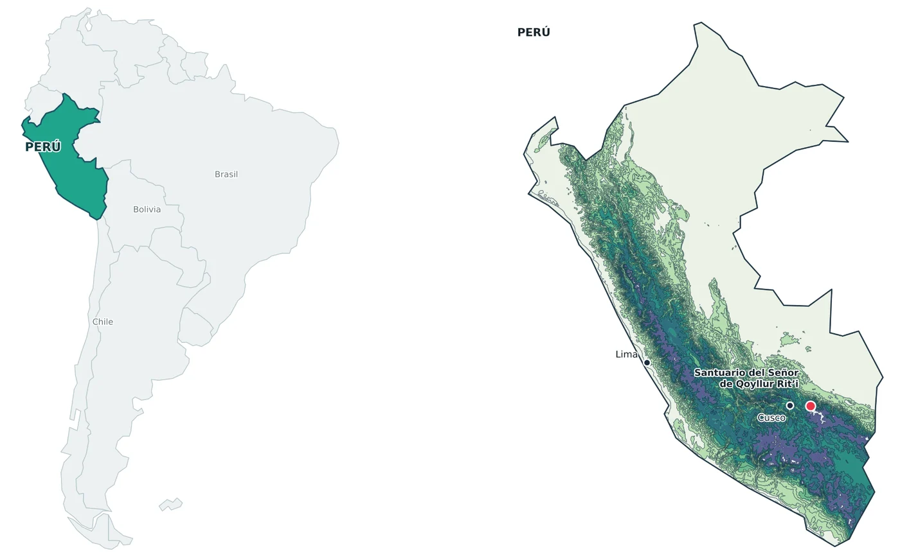
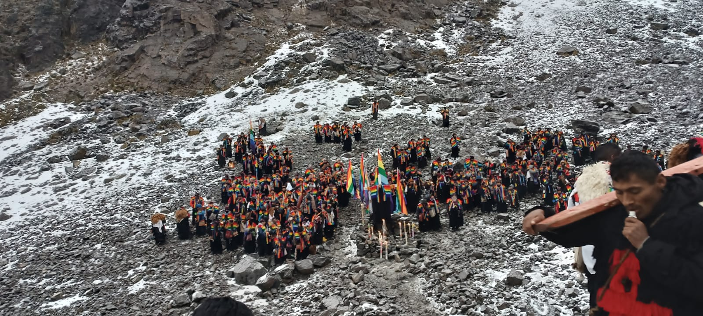
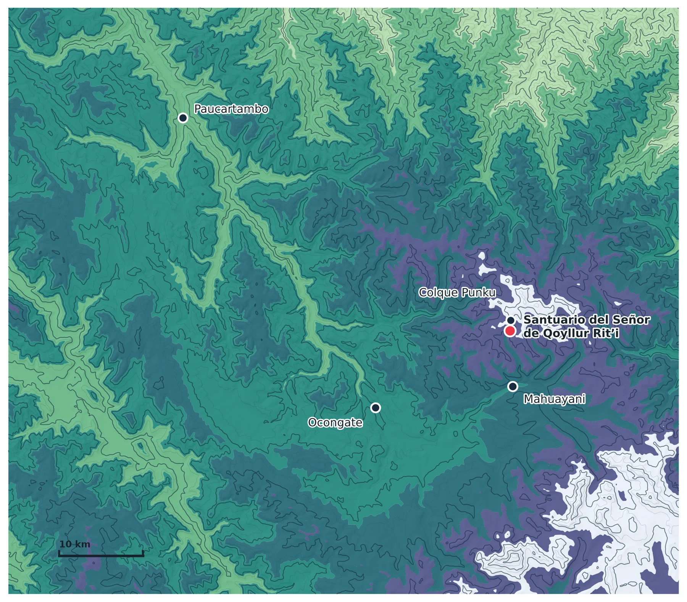
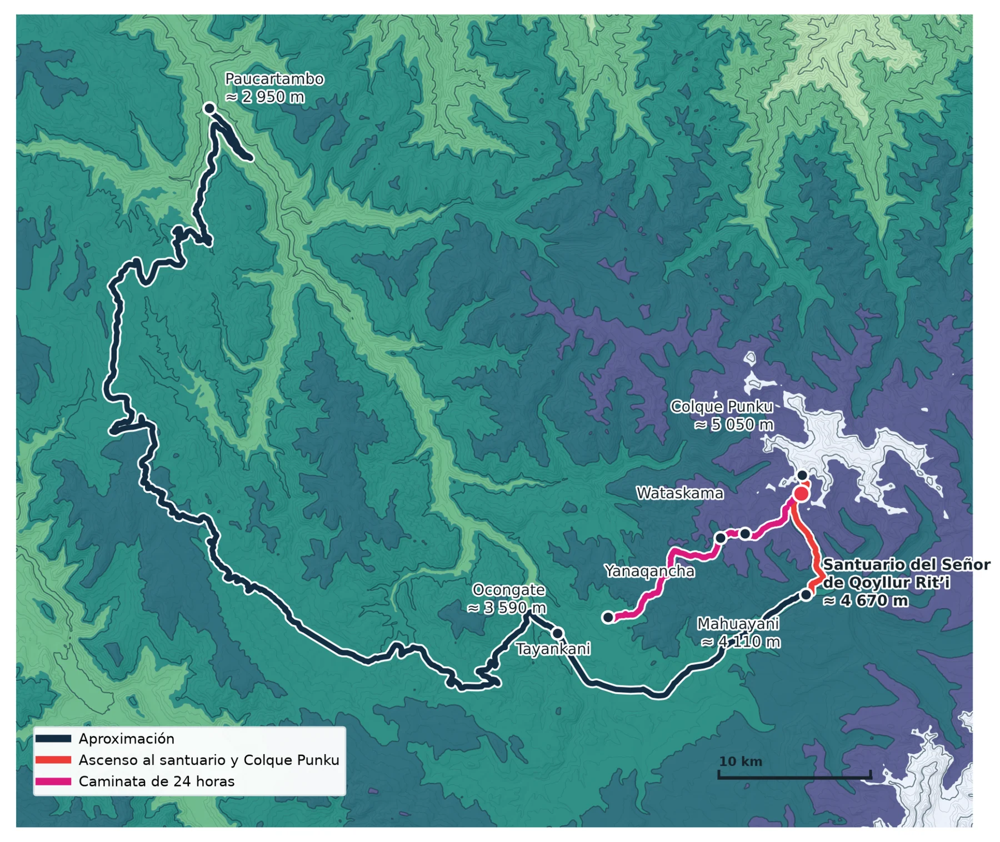
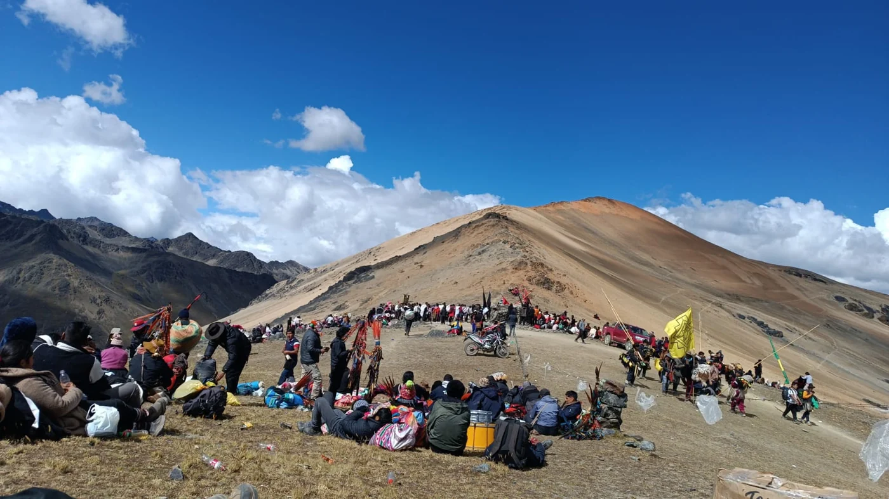
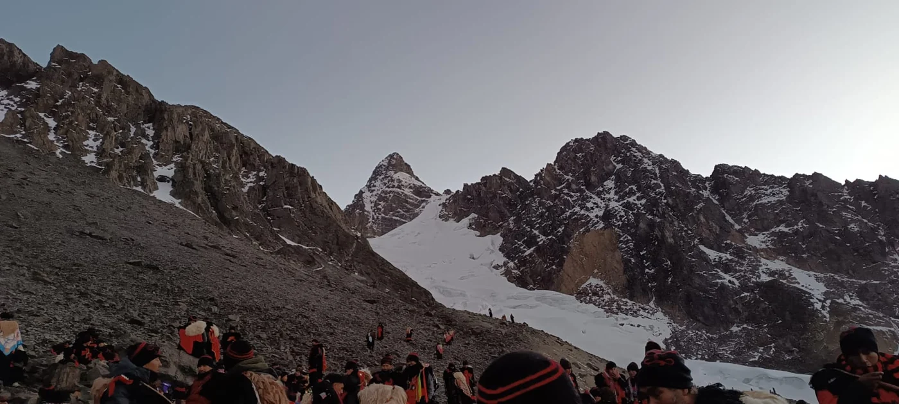
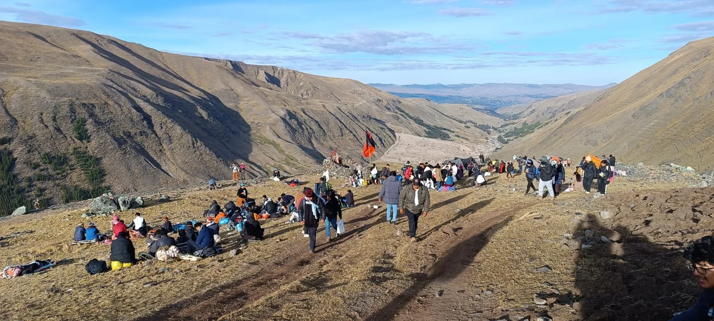
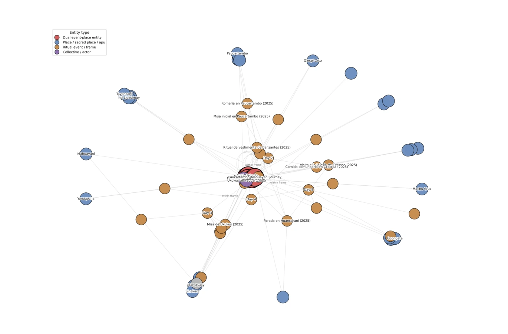
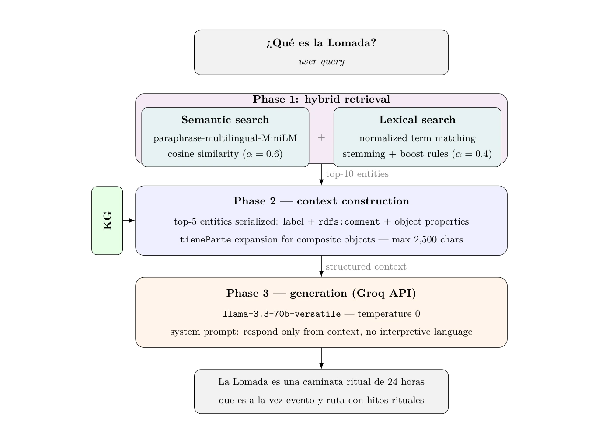

II Semana de la Inteligencia Artificial · Universidad Alberto Hurtado · 28 de octubre de 2026
Un grafo construido entre muchos
Inteligencia artificial y conocimiento situado en Qoyllur Rit’i
Conferencia: Javier Vera Zúñiga · Universidad Tecnológica del Perú Investigación en colaboración con Dina Cornejo Meza · Arqueóloga e investigadora Google Scholar
Fotografía: Javier Vera Zúñiga · trabajo de campo 2025
01 / El recorrido que da origen a los trabajos
De Chile al territorio de Qoyllur Rit’i
La historia de esta investigación reúne una trayectoria de Chile al Perú, trabajo interdisciplinario y participación directa en prácticas rituales de la región del Cusco. El territorio no es una ilustración secundaria de los datos: es el contexto en que se observaron las relaciones que después se modelaron.
Trabajo y colaboración
Javier Vera Zúñiga y Dina Cornejo Meza han trabajado conjuntamente en el estudio de la representación digital del patrimonio andino. Los artículos también reconocen a sus otros coautores y el aporte de los colectivos, participantes y fuentes que hacen posible documentar estas prácticas.
El manuscrito del grafo situado se fundamenta en observación participante de la peregrinación de 2025, incluida la participación del primer autor en la comparsa de ukukus de la Nación Paucartambo. El registro fotográfico y cartográfico de 2026 amplía la documentación territorial, pero no es la fuente temporal del grafo descrito en ese manuscrito.

Localización inicial para situar la investigación. Mapa elaborado a partir de los materiales cartográficos aportados para la conferencia.
La exposición examina tres infraestructuras diferentes de representación: una clasificación institucional (UNESCO), una base de conocimiento colaborativa (Wikidata) y un grafo construido a partir de documentación de campo.
02 / Herramientas para comprender los artículos
¿Qué es un grafo? Una explicación con Qoyllur Rit’i
Un grafo representa entidades y relaciones. Sus nodos son los elementos que queremos estudiar; sus aristas indican cómo están vinculados. Pero el significado del vínculo cambia según la fuente y la pregunta de investigación.
G = (V, E)Una estructura formada por nodos y aristas.
Nodo (V)
En UNESCO puede ser un descriptor; en nuestro grafo de campo, un lugar o acontecimiento.
Arista (E)
En UNESCO expresa coocurrencia; en una ontología puede tener un nombre y una dirección.
Ejemplo 01 · UNESCO, ficha 00567
Del registro patrimonial a una red de descriptores
La ficha oficial de Qoyllur Rit’i incluye peregrinación, procesión, danza, vestuario, máscaras, percusión y arte textil. Observa cómo cambia su representación.
Primero: ¿qué es un nodo? Aquí estamos viendo una ficha de UNESCO y siete de sus descriptores primarios. Las líneas muestran qué etiquetas aparecen en esa ficha; todavía no son las aristas de la red de coocurrencia del artículo.
Las etiquetas proceden del registro de Qoyllur Rit’i citado en el artículo de UNESCO. Los esquemas son reconstrucciones didácticas de una ficha, no la figura estadística ni la red completa de 220 descriptores del estudio.
Aquí el nodo ya no es un descriptor de UNESCO: representa una entidad documentada. Las flechas expresan relaciones dirigidas y tipadas.
Cómo leerlo: «Lomada es un evento» y «Lomada es un lugar». rdf:type significa «pertenece a la clase». La doble clasificación es un resultado documentado en el manuscrito sobre el grafo situado.
Este esquema representa solo una relación de clasificación presente en la ontología. Las relaciones temporales, espaciales y rituales, así como los otros casos de doble condición, se desarrollan en el capítulo del grafo situado.
Una misma herramienta matemática, dos preguntas distintas. El artículo UNESCO analiza cómo se asocian los descriptores de los registros patrimoniales; el grafo situado expresa qué entidades y relaciones fueron documentadas durante la peregrinación. Las figuras empíricas completas aparecen después, en sus respectivos capítulos.
UNESCO: qué muestran las redes de su clasificación del patrimonio
El primer estudio examina los descriptores usados por UNESCO para clasificar el patrimonio cultural inmaterial. No analiza cuánto patrimonio tienen los países, sino cómo queda representado dentro de un vocabulario internacional.
Primero, ¿qué es Qoyllur Rit’i?

Trabajo de campo durante Qoyllur Rit’i, 2025. Fotografía: Javier Vera Zúñiga.
Qoyllur Rit’i es una peregrinación ritual andina que se celebra anualmente en la región del Cusco, cerca del glaciar de Sinakara. Convoca a peregrinos y delegaciones de distintas comunidades, organizados en naciones y comparsas, y articula prácticas de devoción católica con relaciones andinas con las montañas, el territorio y el calendario agrícola.
El recorrido comprende procesiones, música, danzas, ofrendas y obligaciones colectivas. La peregrinación al Santuario del Señor de Qoyllurit’i fue inscrita por UNESCO en 2011 (referencia 00567).
La descripción procede de los artículos de Vera Zúñiga, Urbina Parada y Cornejo Meza (2026), y de Vera Zúñiga y Cornejo Meza (2026). Consultar la ficha oficial UNESCO.
Del ritual a una ficha: ¿qué se gana y qué se reduce?
Para registrar una práctica muy compleja, UNESCO le asigna etiquetas. En Qoyllur Rit’i aparecen, entre otras, Pilgrimages, Procession, Dance, Masks y Textile arts como descriptores primarios. Entre los secundarios se encuentran Animism, Catholicism, Religious syncretism y Sacred sites. Son términos útiles para buscar y comparar registros, pero no equivalen a una descripción completa de lo que viven sus participantes.
Primera pregunta de investigación del artículo¿Los países sudamericanos se asocian de forma desproporcionada con comunidades de descriptores religiosos o folclóricos?
El método en tres operaciones
1 · Construir redes
Cada nodo es un descriptor, no una festividad. Dos descriptores se conectan si aparecen en una misma inscripción; el peso registra cuántas veces coocurren.
2 · Detectar comunidades
El algoritmo Louvain encuentra grupos de descriptores más conectados entre sí; después esos grupos se interpretan temáticamente.
3 · Comparar países
Se observa cómo se distribuyen sus inscripciones entre comunidades y se calcula la entropía de Shannon para medir dispersión en la clasificación, no diversidad cultural intrínseca.
Figura 1 del artículo. Los colores distinguen comunidades de descriptores primarios. La red revela asociaciones recurrentes que una lista alfabética de etiquetas no mostraría. Haz clic para ampliar.
Cómo leer la redCada punto representa un descriptor de UNESCO; una línea une dos descriptores registrados en una misma inscripción. Los colores identifican comunidades de etiquetas que aparecen asociadas con frecuencia: no son países ni grupos de personas.
En la clasificación de UNESCO, las inscripciones vinculadas con Perú y Bolivia se concentran especialmente en comunidades de prácticas rituales, performativas y devocionales. Este resultado habla del vocabulario de la base de datos, no de una esencia cultural de esos países.
Resultado 2 · Las dos capas ofrecen imágenes distintas
Figura 3b. Al examinar descriptores secundarios aparecen otras dimensiones, incluidas las ecológicas y agrícolas.
Cómo leer las barrasCada fila corresponde a un país. La longitud de cada barra indica la proporción de inscripciones asociadas con una comunidad temática. Los colores distinguen comunidades de la capa primaria (izquierda) y secundaria (derecha), no valoraciones positivas o negativas.
La entropía resume cuán distribuido queda un país entre esas comunidades: Brasil 2,77; Colombia 2,65; Perú 2,57; Uruguay 1,35 (promedios reportados). Una entropía alta no significa que un país tenga una cultura más rica; solo indica una representación menos concentrada dentro del sistema de categorías analizado.
Qué mide la entropíaSi las inscripciones de un país aparecen repartidas entre varias comunidades, su entropía es mayor; si se concentran en unas pocas, es menor. No mide riqueza ni diversidad cultural real, sino la dispersión de sus etiquetas dentro de la clasificación estudiada.
Figura 4 del artículo · Entropía representacional. Azul: descriptores primarios. Naranja: secundarios. Los países están ordenados según su entropía media: Brasil (2,77), Colombia (2,65) y Perú (2,57) presentan los mayores promedios; Uruguay (1,35) el menor. Haz clic para ampliar.
Resultado 3 · Los cruces revelan la lógica del vocabulario
Figura 5. Red de asociaciones entre las dos capas. Pares como Procession y Religious syncretism muestran cómo una práctica se vincula a categorías performativas y a interpretaciones contextuales.
Cómo leer los crucesLas líneas conectan descriptores primarios con secundarios que coinciden en inscripciones. Una asociación frecuente, como Procession con Religious syncretism, muestra un patrón de clasificación; no prueba por sí sola una relación causal entre prácticas rituales.
Conclusión centralEl estudio identifica asimetrías y sesgos semánticos en los metadatos de UNESCO: distintas regiones son descritas a través de combinaciones recurrentes de categorías. El análisis de redes permite hacer visible esa organización sin confundir las etiquetas institucionales con la vida cultural que describen.
Profundizar: red de descriptores secundarios y límites
La capa secundaria incluye categorías ecológicas, históricas y de transmisión cultural que suelen figurar como contexto. La figura adicional muestra cómo se relacionan esos descriptores.
Límites: una coocurrencia no demuestra una relación entre prácticas en el mundo; los descriptores son decisiones editoriales; el análisis no mide la complejidad cultural de los países. Las inscripciones multinacionales requieren precauciones al proyectar resultados nacionales.
Artículo: Vera Zúñiga, J., Urbina Parada, F. & Cornejo Meza, D. (2026). “Mapping semantic bias in UNESCO intangible heritage metadata through community detection in South America”. npj Heritage Science 14:133. DOI 10.1038/s40494-026-02400-2.
Wikidata: cómo se conectan —y cómo quedan aisladas— las festividades
El segundo estudio cambia de objeto. Ya no examina etiquetas de UNESCO, sino entidades y vínculos registrados en Wikidata. Compara la representación digital de Qoyllur Rit’i y de la Festividad de la Virgen del Carmen de Paucartambo, dos celebraciones de importancia ritual en el Cusco.
Antes de analizar la red: Wikipedia, Wikidata y SPARQL
Wikipedia y Wikidata son proyectos distintos y complementarios. Una página de Wikipedia suele estar organizada como un artículo para leer. Wikidata almacena datos estructurados: entidades identificadas por un código, propiedades que describen sus relaciones y valores que pueden consultarse automáticamente. Es una base de conocimiento colaborativa, con contribuciones de personas, importaciones y herramientas automáticas.
WIKIPEDIAUn artículo
Explica con texto la historia, el contexto y las prácticas de Qoyllur Rit’i.
WIKIDATAEntidades y relaciones
Qoyllur Rit’i tiene el identificador Q2408955. Las propiedades (P...) expresan relaciones con otras entidades.
SPARQLPreguntas a la base
Es el lenguaje utilizado para consultar esos datos relacionados: permite recuperar, por ejemplo, vínculos geográficos o de clasificación.
Una relación puede leerse como una afirmación con tres partes: entidad → propiedad → entidad. En el corpus del artículo, Qoyllur Rit’i mantiene vínculos con Perú mediante propiedades como P17 (país) y P495 (país de origen). Cada propiedad tiene un significado preciso; no basta con dibujar una línea entre dos nombres.
Qoyllur Rit’i Q2408955país · P17 →Perú Q419
¿Cómo se construyó la red del artículo?
Entre marzo y junio de 2025, los autores realizaron consultas SPARQL tomando como puntos de partida Qoyllur Rit’i (Q2408955) y la Virgen del Carmen de Paucartambo (Q60643381). Extrajeron relaciones de cinco ámbitos y reunieron los resultados en un grafo dirigido:
Esta consulta recupera los valores asociados a la propiedad territorial P131 de Qoyllur Rit’i. No presupone cuáles serán los resultados.
SELECT ?lugar WHERE {
wd:Q2408955 wdt:P131 ?lugar .
}
En el artículo, la extracción real utiliza consultas sucesivas y revisión de resultados para controlar el alcance semántico y evitar relaciones irrelevantes.
228 entidades · 495 registros de aristas225 nodos y 491 aristas en el componente mayor13 comunidades detectadas
Primer resultado · Una red con jerarquías y comunidades
Red del estudio, facilitada para esta conferencia. La visualización representa el componente mayor (225 nodos y 491 aristas). Los nodos de Perú y de categorías patrimoniales concentran muchos enlaces; las festividades no ocupan esas posiciones centrales. Amplía la figura para localizar ambos casos.
Cómo leer este grafoUn punto representa una entidad recuperada de Wikidata; una línea, una relación entre entidades. Una zona con muchos vínculos indica mayor conexión en la muestra consultada, no mayor relevancia cultural. Ubica a Qoyllur Rit’i hacia la parte superior del centro y a la Virgen del Carmen en la zona lateral izquierda.
El algoritmo Louvain identificó 13 comunidades. Las agrupaciones más numerosas reúnen entidades administrativas y patrimoniales del Cusco; otras son pequeñas y concentran referencias rituales. El resultado no es una clasificación de festividades «más importantes», sino una descripción de cómo se enlazaron los datos en Wikidata.
Comunidad 0 · 42 entidades
Qoyllur Rit’i
Se agrupa con un conjunto nacional y regional, asociado con Perú y divisiones territoriales. No aparece como el centro de una comunidad ritual autónoma.
Comunidad 3 · 6 entidades
Virgen del Carmen de Paucartambo
Forma parte de una pequeña isla ritual, vinculada a referencias devocionales y fechas; sus conexiones con el resto de la red son limitadas.
Segundo resultado · ¿Qué significa estar en el núcleo de una red?
El análisis k-core identifica subredes en las que cada nodo mantiene, dentro de la subred, al menos k conexiones. Así se distinguen capas periféricas y zonas de mayor integración estructural. En la red analizada aparecen niveles del 1 al 4:
k = 1Virgen del Carmen de PaucartamboPresencia periférica en la muestra
k = 3Qoyllur Rit’iIntegración intermedia
k = 4Perú, «bien cultural» y nodos administrativosNúcleo institucional más denso
La separación entre comunidad y k-core importa: la primera pregunta «¿con qué grupo se relaciona una entidad?»; el segundo, «¿cuán integrada está en el conjunto de relaciones?». Qoyllur Rit’i está en una comunidad nacional-regional, pero no en el núcleo más denso. La Virgen del Carmen aparece en una comunidad ritual pequeña y en la capa externa.
¿Qué nos dice que no aparezca una conexión?
En esta extracción no hay una arista directa entre las dos festividades, aunque ambas mantienen relaciones culturales y territoriales en la práctica. Esto no demuestra que no exista un vínculo real: significa que no quedó registrado mediante las propiedades, entidades y criterios seleccionados. Del mismo modo, un núcleo digital denso no equivale a mayor valor patrimonial.
Conclusión centralWikidata hace algunas relaciones fácilmente consultables —territorio, clasificación, reconocimiento—, pero registra con menos continuidad otras que sostienen prácticas rituales: participación, secuencias, obligaciones y conocimiento vivido. El grafo es un diagnóstico de visibilidad computacional, no una medida de importancia cultural.
Límites del estudio: los resultados describen una muestra de Wikidata consultada en 2025; dependen de las propiedades seleccionadas, de los enlaces disponibles y de la edición colaborativa. El artículo reporta 495 registros de aristas dirigidas; al agrupar relaciones con iguales nodos de origen y destino se obtienen 493 pares distintos.
Artículo: Vera Zúñiga, J. & Cornejo Meza, D. (2026). “Festivities at the edge of data: an interdisciplinary study of Andean festivals in Wikidata”. Humanities & Social Sciences Communications. DOI 10.1057/s41599-026-08715-6.
05 / Territorio y documentación · 2025 y 2026
Del registro digital al territorio recorrido
La peregrinación reúne lugares, recorridos, momentos y prácticas rituales. Los mapas y las trazas GPS de 2026 permiten seguir los desplazamientos documentados en el territorio.

Contexto topográfico y espacial del santuario, el Sinakara y el entorno del glaciar. Cartografía del proyecto, 2026. No es la red semántica del artículo de 2025.

Recorridos y caminata registrados durante la documentación de 2026. Se presenta como material de campo complementario; no debe confundirse con la secuencia validada en el grafo del trabajo de 2025.

Participación y desplazamiento, 2026.

Entorno de Colque Punku, 2026.

Tramo de caminata, 2026.
Fotografías: Javier Vera Zúñiga, archivo de campo compartido para la conferencia (2026). Los lugares y secuencias deben leerse junto a la documentación GPS, no deducirse automáticamente de una imagen aislada.
El GPX enlazado contiene puntos de referencia y favoritos, no se presenta como la traza completa. El mapa narrativo emplea su propio conjunto de rutas y paradas del proyecto; su contenido puede revisarse antes de hacerlo público.
06 / Manuscrito de investigación · 19 de octubre de 2026
Construir un grafo desde el campo: conocimiento situado
El tercer trabajo no consiste en ampliar mecánicamente Wikidata. Parte de una decisión diferente: emplear la participación y la documentación de la peregrinación de 2025 como fuente principal para representar secuencias y relaciones que las bases institucionales describen solo parcialmente.
Inti Alabado · Festividad del Señor de Qoyllur Rit’i (2026). Javier Vera Zúñiga, Ukumari de la Nación Paucartambo, junto al primer capitán de la danza.
Fuente primaria: “Situated Knowledge in Knowledge Graphs: A Field-Based Representation of the Qoyllur Rit’i Ritual Landscape”. Manuscrito de investigación, versión 19/10/2026. No debe citarse como artículo publicado.
87individuos nombrados
15clases ontológicas
22propiedades de objeto
≈520triples de afirmaciones, sin declaraciones de ontología
Qué se modela
Una ontología RDF/OWL relaciona 39 lugares, eventos y sus marcos temporales, vestimenta, instrumentos y otros elementos. El documento describe 28 eventos ordenados en siete marcos temporales, 14 propiedades de datos, aproximadamente 340 afirmaciones de relación entre entidades y 180 afirmaciones de datos. Es una representación inicial y deliberadamente acotada, no un inventario exhaustivo del ritual.

Figura 2 del manuscrito de 2026: estructura relacional del grafo centrada en cinco entidades que desempeñan simultáneamente los papeles de evento y lugar. Las posiciones de los puntos son producto de un algoritmo de disposición gráfica, no coordenadas geográficas.
Para observar el conjunto de relaciones en una visualización navegable, abre el grafo interactivo del proyecto; puedes buscar una entidad y examinar sus conexiones.
La Lomada: una ruta y un acontecimiento
El caso de la Lomada (Loman Pureq) es particularmente instructivo: el manuscrito la documenta como una caminata ritual de aproximadamente 24 horas, con siete puntos de paso, y al mismo tiempo como un evento con secuencia y participación. Modelarla como una entidad con doble pertenencia a las clases EventoRitual y Lugar evita forzarla a una sola categoría.
Contribución ontológica del estudio
El manuscrito identifica cinco entidades de doble naturaleza evento–lugar, incluida la Lomada. No se trata de decir que todos los lugares sean eventos: se argumenta, a partir del caso documentado, que algunas acciones rituales y sus espacios resultan inseparables para los fines de representación del grafo.
La procedencia también importa: la posibilidad de relacionar una afirmación con fuentes, observaciones y contexto hace que el grafo sea auditable y revisable. Ese principio permite discutir tanto lo que el modelo incorpora como lo que todavía falta representar.
07 / Prueba técnica y alcance
Inteligencia artificial: consultar el grafo y reconocer sus límites
El manuscrito evalúa un sistema de recuperación aumentada con generación (Graph-RAG). Su función principal en el artículo es diagnosticar qué puede recuperar el grafo, no demostrar que la IA ya comprenda la peregrinación.

Arquitectura de recuperación y generación representada en la figura 3 del manuscrito. El sistema recupera fragmentos del grafo antes de elaborar respuestas, y la calidad de estas depende de qué entidades y relaciones llega a recuperar.
La evaluación reportada
16consultas diseñadas para probar el sistema
10respuestas correctas
3respuestas parciales
3respuestas fallidas
Consulta
Resultado
Lectura metodológica
¿Qué es la Lomada? (C11)
Correcta
La respuesta recupera su doble condición de evento y lugar.
¿Qué lugares recorre la Lomada? (B7)
Parcial
Se recuperan tres de siete lugares de paso.
¿Qué ocurre el lunes? (B6)
Fallida
La recuperación privilegia propiedades de la ontología frente a los acontecimientos.
¿Qué es P’achakunapata? (C12)
Parcial
Hay representación, pero el contexto relacional recuperado es insuficiente.
En 7 de las 16 preguntas aparecieron entre los cinco primeros resultados componentes del esquema ontológico (TBox, como clases y propiedades), en lugar de entidades concretas documentadas (ABox). El fenómeno contribuye a explicar algunas respuestas fallidas: no basta con tener relaciones correctas si el mecanismo de búsqueda recupera el tipo de información equivocado.
Resultado del manuscrito, no promesa comercial
El valor de la prueba está en hacer visibles las fortalezas y carencias del modelo. Responde mejor cuando la relación consultada está bien documentada y enlazada; es más frágil frente a dominios incompletos, vecindarios poco densos y ruido de recuperación.
Las demostraciones enlazadas son recursos técnicos en evolución: su estado actual puede no ser idéntico al sistema evaluado en el manuscrito fechado el 19/10/2026.
Tres resultados, tres escalas de representación
Trabajo
Unidad analizada
Lo que podemos afirmar
UNESCO (2026)
Descriptores y coocurrencias
La clasificación institucional distribuye sus categorías de manera desigual.
Wikidata (2026)
Entidades y vínculos seleccionados
La visibilidad estructural de dos festividades es limitada en el grafo extraído.
Grafo de campo (manuscrito 2026)
Entidades rituales y relaciones observadas
Es viable representar secuencias, territorio y dualidades, pero la recuperación muestra lagunas verificables.
Construir un grafo no equivale a completar una cultura con datos. Permite hacer explícitas relaciones, fuentes y decisiones de representación que pueden ser examinadas y corregidas.
Volver a Qoyllur Rit’i: del recorrido a las relaciones
Estas tres investigaciones convergen en Qoyllur Rit’i, una peregrinación que no puede comprenderse únicamente a partir de una ficha patrimonial o de conexiones entre entidades digitales. El grafo de campo nace de la observación participante en 2025, incluida la participación de Javier Vera Zúñiga como Ukumari (ukuku) de la Nación Paucartambo.
Esa experiencia permitió documentar desde dentro lugares, tiempos, desplazamientos y prácticas; no sustituye el conocimiento de las comunidades ni autoriza a hablar por ellas. La documentación GPS de 2026 complementa ese trabajo y permite seguir ampliando y revisando las relaciones registradas.
El objetivo de la IA y de los grafos no es reemplazar la experiencia del ritual, sino construir representaciones explícitas, discutibles y corregibles junto con quienes lo conocen y practican.
Fuentes y materiales reproducibles
Volver a los trabajos y a los datos
Estas son las fuentes concretas de las afirmaciones de la conferencia. El documento se ha redactado para que las figuras y estadísticas puedan rastrearse hasta sus trabajos de origen.
Investigaciones
Vera Zúñiga, Urbina Parada y Cornejo Meza (2026). UNESCO, redes semánticas y diversidad representacional. DOI 10.1038/s40494-026-02400-2.
Créditos y uso: texto y apunte académico aportado por sus autores; mapas y fotografías de campo aportados para la conferencia; las figuras científicas se atribuyen a sus publicaciones. Antes de publicar archivos con fotografías de terceros, imágenes de revistas o registros territoriales sensibles, revisar permisos, consentimiento y nivel de detalle público. Publicar un repositorio no implica ceder automáticamente licencias de reutilización sobre todos sus contenidos.
Preparado para la conferencia del 28 de octubre de 2026 en la Universidad Alberto Hurtado. El código HTML funciona localmente y en GitHub Pages, sin dependencias externas.